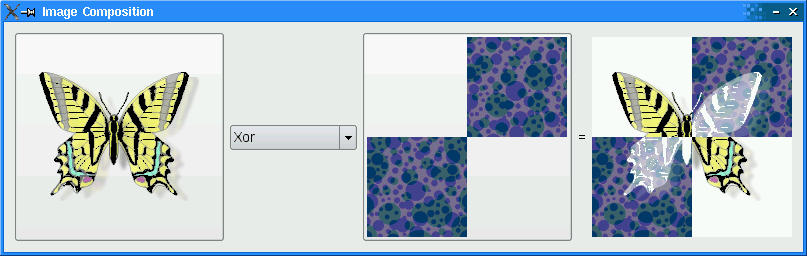

Image Composition Example
Shows how composition modes work in QPainter.

Setting Up The Resource File
The Image Composition example requires two source images, butterfly.png and checker.png that are embedded within imagecomposition.qrc. The file contains the following code:
<!DOCTYPE RCC><RCC version="1.0">
<qresource>
<file>images/butterfly.png</file>
<file>images/checker.png</file>
</qresource>
</RCC>
For more information on resource files, see The Qt Resource System.
ImageComposer Class Definition
The ImageComposer class is a subclass of QWidget that implements three private slots, chooseSource(), chooseDestination(), and recalculateResult().
class ImageComposer : public QWidget { Q_OBJECT public: ImageComposer(); private slots: void chooseSource(); void chooseDestination(); void recalculateResult();
In addition, ImageComposer consists of five private functions, addOp(), chooseImage(), loadImage(), currentMode(), and imagePos(), as well as private instances of QToolButton, QComboBox, QLabel, and QImage.
private: void addOp(QPainter::CompositionMode mode, const QString &name); void chooseImage(const QString &title, QImage *image, QToolButton *button); void loadImage(const QString &fileName, QImage *image, QToolButton *button); QPainter::CompositionMode currentMode() const; QPoint imagePos(const QImage &image) const; QToolButton *sourceButton; QToolButton *destinationButton; QComboBox *operatorComboBox; QLabel *equalLabel; QLabel *resultLabel; QImage sourceImage; QImage destinationImage; QImage resultImage; };
ImageComposer Class Implementation
We declare a QSize object, resultSize, as a static constant with width and height equal to 200.
static const QSize resultSize(200, 200);
Within the constructor, we instantiate a QToolButton object, sourceButton and set its iconSize property to resultSize. The operatorComboBox is instantiated and then populated using the addOp() function. This function accepts a QPainter::CompositionMode, mode, and a QString, name, representing the name of the composition mode.
ImageComposer::ImageComposer() { sourceButton = new QToolButton; sourceButton->setIconSize(resultSize); operatorComboBox = new QComboBox; addOp(QPainter::CompositionMode_SourceOver, tr("SourceOver")); addOp(QPainter::CompositionMode_DestinationOver, tr("DestinationOver")); addOp(QPainter::CompositionMode_Clear, tr("Clear")); addOp(QPainter::CompositionMode_Source, tr("Source")); addOp(QPainter::CompositionMode_Destination, tr("Destination")); addOp(QPainter::CompositionMode_SourceIn, tr("SourceIn")); addOp(QPainter::CompositionMode_DestinationIn, tr("DestinationIn")); addOp(QPainter::CompositionMode_SourceOut, tr("SourceOut")); addOp(QPainter::CompositionMode_DestinationOut, tr("DestinationOut")); addOp(QPainter::CompositionMode_SourceAtop, tr("SourceAtop")); addOp(QPainter::CompositionMode_DestinationAtop, tr("DestinationAtop")); addOp(QPainter::CompositionMode_Xor, tr("Xor")); addOp(QPainter::CompositionMode_Plus, tr("Plus")); addOp(QPainter::CompositionMode_Multiply, tr("Multiply")); addOp(QPainter::CompositionMode_Screen, tr("Screen")); addOp(QPainter::CompositionMode_Overlay, tr("Overlay")); addOp(QPainter::CompositionMode_Darken, tr("Darken")); addOp(QPainter::CompositionMode_Lighten, tr("Lighten")); addOp(QPainter::CompositionMode_ColorDodge, tr("ColorDodge")); addOp(QPainter::CompositionMode_ColorBurn, tr("ColorBurn")); addOp(QPainter::CompositionMode_HardLight, tr("HardLight")); addOp(QPainter::CompositionMode_SoftLight, tr("SoftLight")); addOp(QPainter::CompositionMode_Difference, tr("Difference")); addOp(QPainter::CompositionMode_Exclusion, tr("Exclusion"));
The destinationButton is instantiated and its iconSize property is set to resultSize as well. The QLabels equalLabel and resultLabel are created and resultLabel's minimumWidth is set.
destinationButton = new QToolButton;
destinationButton->setIconSize(resultSize);
equalLabel = new QLabel(tr("="));
resultLabel = new QLabel;
resultLabel->setMinimumWidth(resultSize.width());
We connect the following signals to their corresponding slots:
sourceButton's clicked() signal is connected tochooseSource(),operatorComboBox's activated() signal is connected torecalculateResult(), anddestinationButton's clicked() signal is connected tochooseDestination().
connect(sourceButton, &QAbstractButton::clicked,
this, &ImageComposer::chooseSource);
connect(operatorComboBox, &QComboBox::activated,
this, &ImageComposer::recalculateResult);
connect(destinationButton, &QAbstractButton::clicked,
this, &ImageComposer::chooseDestination);
A QGridLayout, mainLayout, is used to place all the widgets. Note that mainLayout's sizeConstraint property is set to QLayout::SetFixedSize, which means that ImageComposer's size cannot be resized at all.
QGridLayout *mainLayout = new QGridLayout;
mainLayout->addWidget(sourceButton, 0, 0, 3, 1);
mainLayout->addWidget(operatorComboBox, 1, 1);
mainLayout->addWidget(destinationButton, 0, 2, 3, 1);
mainLayout->addWidget(equalLabel, 1, 3);
mainLayout->addWidget(resultLabel, 0, 4, 3, 1);
mainLayout->setSizeConstraint(QLayout::SetFixedSize);
setLayout(mainLayout);
We create a QImage, resultImage, and we invoke loadImage() twice to load both the image files in our imagecomposition.qrc file. Then, we set the windowTitle property to "Image Composition".
resultImage = QImage(resultSize, QImage::Format_ARGB32_Premultiplied);
loadImage(":/images/butterfly.png", &sourceImage, sourceButton);
loadImage(":/images/checker.png", &destinationImage, destinationButton);
setWindowTitle(tr("Image Composition"));
}
The chooseSource() and chooseDestination() functions are convenience functions that invoke chooseImage() with specific parameters.
void ImageComposer::chooseSource() { chooseImage(tr("Choose Source Image"), &sourceImage, sourceButton); } void ImageComposer::chooseDestination() { chooseImage(tr("Choose Destination Image"), &destinationImage, destinationButton); }
The chooseImage() function loads an image of the user's choice, depending on the title, image, and button.
void ImageComposer::chooseImage(const QString &title, QImage *image, QToolButton *button) { QString fileName = QFileDialog::getOpenFileName(this, title); if (!fileName.isEmpty()) loadImage(fileName, image, button); }
The recalculateResult() function is used to calculate amd display the result of combining the two images together with the user's choice of composition mode.
void ImageComposer::recalculateResult() { QPainter::CompositionMode mode = currentMode(); QPainter painter(&resultImage); painter.setCompositionMode(QPainter::CompositionMode_Source); painter.fillRect(resultImage.rect(), Qt::transparent); painter.setCompositionMode(QPainter::CompositionMode_SourceOver); painter.drawImage(0, 0, destinationImage); painter.setCompositionMode(mode); painter.drawImage(0, 0, sourceImage); painter.setCompositionMode(QPainter::CompositionMode_DestinationOver); painter.fillRect(resultImage.rect(), Qt::white); painter.end(); resultLabel->setPixmap(QPixmap::fromImage(resultImage)); }
The addOp() function adds an item to the operatorComboBox using QComboBox's addItem function. This function accepts a QPainter::CompositionMode, mode, and a QString, name. The rectangle is filled with Qt::Transparent and both the sourceImage and destinationImage are painted, before displaying it on resultLabel.
void ImageComposer::addOp(QPainter::CompositionMode mode, const QString &name) { operatorComboBox->addItem(name, mode); }
The loadImage() function paints a transparent background using fillRect() and draws image in a centralized position using drawImage(). This image is then set as the button's icon.
void ImageComposer::loadImage(const QString &fileName, QImage *image, QToolButton *button) { image->load(fileName); // Scale the image to given size *image = image->scaled(resultSize, Qt::KeepAspectRatio); QImage fixedImage(resultSize, QImage::Format_ARGB32_Premultiplied); QPainter painter(&fixedImage); painter.setCompositionMode(QPainter::CompositionMode_Source); painter.fillRect(fixedImage.rect(), Qt::transparent); painter.setCompositionMode(QPainter::CompositionMode_SourceOver); painter.drawImage(imagePos(*image), *image); painter.end(); button->setIcon(QPixmap::fromImage(fixedImage)); *image = fixedImage; recalculateResult(); }
The currentMode() function returns the composition mode currently selected in operatorComboBox.
QPainter::CompositionMode ImageComposer::currentMode() const { return (QPainter::CompositionMode) operatorComboBox->itemData(operatorComboBox->currentIndex()).toInt(); }
We use the imagePos() function to ensure that images loaded onto the QToolButton objects, sourceButton and destinationButton, are centralized.
QPoint ImageComposer::imagePos(const QImage &image) const { return QPoint((resultSize.width() - image.width()) / 2, (resultSize.height() - image.height()) / 2); }
The main() Function
The main() function instantiates QApplication and ImageComposer and invokes its show() function.
int main(int argc, char *argv[]) { QApplication app(argc, argv); ImageComposer composer; composer.show(); return app.exec(); }